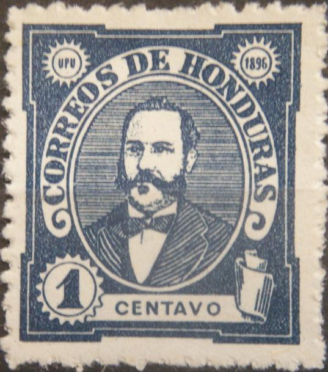
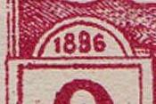
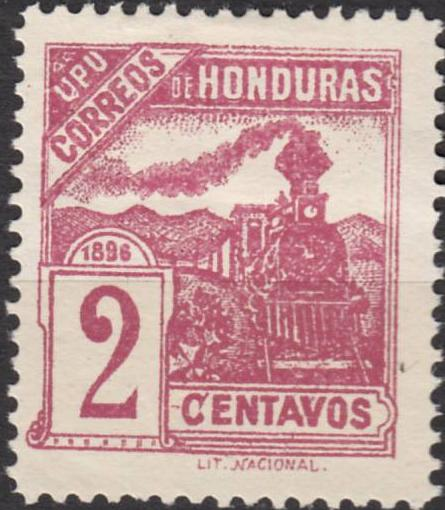
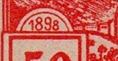
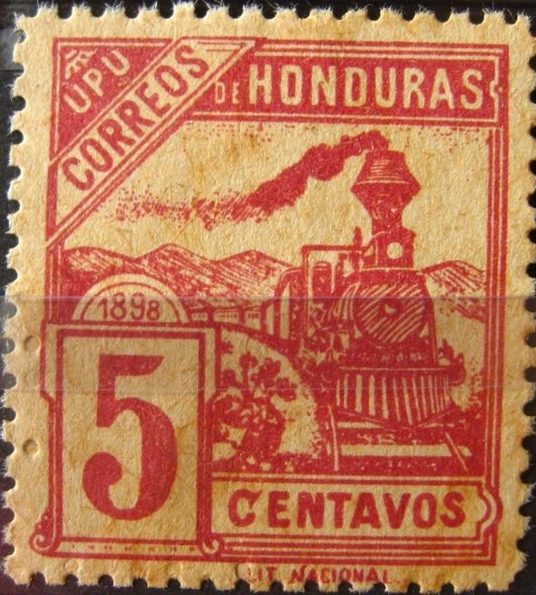
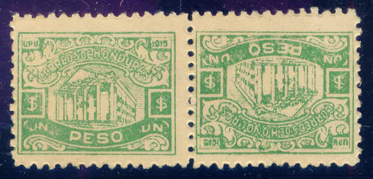

Genuine stamps or reprints.
Return To Catalogue - Honduras 1866-1895 - Honduras miscellaneous
Note: on my website many of the
pictures can not be seen! They are of course present in the
catalogue;
contact me if you want to purchase the catalogue.
For stamps of Honduras issued before 1896 click here.
Genuine stamps or reprints.
1 c blue (exists imperforate?) 2 c brown 5 c lilac 10 c red (exists imperforate?) 20 c green 30 c blue 50 c red 1 P brown Surcharged "PERMITASE" (=permitted for use, issued in 1898) 1 c blue 2 c brown 5 c lilac 10 c red 1 P brown
Value of the stamps |
|||
vc = very common c = common * = not so common ** = uncommon |
*** = very uncommon R = rare RR = very rare RRR = extremely rare |
||
| Value | Unused | Used | Remarks |
| All values | c | c to * | Most used stamps are cancelled reprints or forgeries. |
| With PERMITASE overprint | *** | *** | This overprint was used as a temporary measure for post offices that hadn't received the new stamps yet. |
I have seen a 3 c brown postcard ("CARTE POSTALE") in the same design. I've also seen a 2 c blue "TARJETA POSTAL".
According to the book 'Focus on Forgeries' by V.E.Tyler, reprints are printed on thick opaque paper. They often have "HONDURAS" between bars cancels.
In the book 'Focus on Forgeries' by V.E.Tyler, four different types of forgeries are described. Genuine stamps have perforation 11 1/2.



Two forgeries of the 30 c value, imperforate in between. The
letters "UPU" are too far away from their containing
circles. They are referred to as Type IV in 'Focus on Forgeries'.
All 8 values exists for this type of forgery.
The forger Imperato made forgeries of these stamps. The right eyebrow (left from our viewpoint) is too high. The central part of the "O" in "HONDURAS" and "CORREOS" are too round (should be much more elliptic). The other letters are also slightly different (for example the "S" of "CORREOS"). All 8 values were forged by Imperato. In the 1 c forgery, the "1" is too thin.


Most likely Imperato forgeries (Type I in Tyler's work).
Tyler's Type II forgery:

A forgery on very white paper. The "C" of
"CENTAVOS" is too open. The face is very white.
Another set of forgeries (only the values 1 c, 2 c and 5 c are known):

These forgeries are imperforate (they also exist with perforation
14 1/2). The 1 c has a break in the top of the first
"O" of "CORREOS" (see Tyler's book, he refers
to this forgery type as Type III). The 2 c and 5 c values have a
break in the left left of the "N" of
"HONDURAS".
Also see: http://bigblue1840-1940.blogspot.sg/2012/10/ClassicalStampsHonduras.html for more information.
1 c brown 2 c red 5 c blue 6 c lilac 10 c blue 20 c brown 50 c red 1 P green Official stamps, overprinted "OFICIAL" 5 c blue 10 c blue 20 c brown 50 c red 1 P green
Value of the stamps |
|||
vc = very common c = common * = not so common ** = uncommon |
*** = very uncommon R = rare RR = very rare RRR = extremely rare |
||
| Value | Unused | Used | Remarks |
| All values | c | c to * | Most used stamps are cancelled reprints or forgeries. Misprint 5 c lilac: * |
| With PERMITASE overprint | *** | *** | |
| With OFICIAL overprint | c | ? | |
A misprint, 5 c lilac instead of 5 c blue exists, example:

Misprint
Forgery type I: "1896" instead of "1898"




Forgery, type II, rather deceptive: 'LIT' is written upwards, the mountain to the right of the train touches the train at an angle (it should touch at 90 degrees):

Forgery type II, "LIT" slanting upwards. This forgery
was sold by Fournier (but not necesarilly produced) and first
appeared in 1902 (while the genuine stamps were still valid and
before Fournier even started his career!).
In the type III forgery, the "1898" is written much larger than in the genuine stamps. This forgery is printed on very white paper. It is the only set of forgeries for which the color error has also been forged. In my opinion, the 'plant' design just to the right of the value stands out too much from the background. This is also true for the very light area to the right hand side of the train (below the mountain):




This forgery type even exists with forged "PERMITASE"
overprints.
Another type IV forgery exists with perforation 11 instead of 11 1/2. The mountain is very heavily outlined. I think the following stamps are such Type IV forgeries:


This could be forgery type IV (though I'm not 100 % sure)
If my information is correct, these forgeries originate from Paris and appeared around 1905-1910.
1 c green 2 c red 5 c blue 6 c black 10 c brown 20 c blue 50 c red 1 P orange
Value of the stamps |
|||
vc = very common c = common * = not so common ** = uncommon |
*** = very uncommon R = rare RR = very rare RRR = extremely rare |
||
| Value | Unused | Used | Remarks |
| All values | vc to c | vc to c | |
| With PERMITASE overprint | *** | *** | 50 c does not exist in this state. |

1 c green 2 c red 5 c blue 6 c violet 10 c brown 20 c blue 50 c red 1 P orange Surcharged (1910)
'1' on 20 c blue '5' (green) on 20 c blue '10' (red) on 20 c blue
For the specialist: these stamps are perforated 14, the 1 c green also exists perforated 11 1/2 (this stamp is lithographed).
Value of the stamps |
|||
vc = very common c = common * = not so common ** = uncommon |
*** = very uncommon R = rare RR = very rare RRR = extremely rare |
||
| Value | Unused | Used | Remarks |
| 1 c | vc | vc | Two different printing methods were used. |
| 2 c | vc | vc | |
| 5 c | c | vc | |
| 6 c | c | vc | |
| 10 c | c | c | |
| 20 c | c | c | |
| 50 c | * | * | |
| 1 P | * | * | |
| Surcharged | |||
| 1 on 20 c | * | * | |
| 5 on 20 c | * | * | |
| 10 on 20 c | * | * | |

1 c violet 2 c green 5 c red 6 c blue 10 c blue 20 c yellow 50 c brown 1 P green Overprinted 'XC Aniversario de la Independencia' 2 c green Surcharged (1913)

"2 CENTAVOS" on 1 c violet "2 Cts." on 1 c violet "2 Cts." on 10 c blue "2 Cts." on 20 c yellow "5 Cts." on 1 c violet "5 Cts." on 10 c blue "6 Cts." on 1 c violet
These stamps exist with overprint "OFICIAL"
Value of the stamps |
|||
vc = very common c = common * = not so common ** = uncommon |
*** = very uncommon R = rare RR = very rare RRR = extremely rare |
||
| Value | Unused | Used | Remarks |
| 1 c | vc | vc | |
| 2 c | vc | vc | |
| 5 c | vc | vc | |
| 6 c | vc | vc | |
| 10 c | vc | c | |
| 20 c | c | * | |
| 50 c | * | * | |
| 1 P | * | * | |
Independence issue |
|||
| 2 c | *** | *** | |
| Surcharged | |||
| 2 centavos on 1 c | * | c | |
| 2 c on 1 c | *** | *** | |
| 2 c on 10 c | * | * | |
| 2 c on 20 c | ** | ** | |
| 5 c on 1 c | * | * | |
| 5 c on 10 c | * | * | |
| 6 c on 1 c | * | * | |
| With "OFICIAL" overprint in red or black | |||
| 1 c | c | c | Red overprint |
| 2 c | * | * | Black overprint |
| 5 c | * | * | Red or black overprint |
| 6 c | *** | ** | Red or black overprint |
| 10 c | * | * | Red or black overprint |
| 20 c | ** | ** | Red or black overprint |
| 50 c | *** | *** | Red or black overprint |
| 1 P | *** | *** | Red overprint |
| "10 cts." on 1 c | * | * | 1913 |
| "20 cts."on 1 c | * | * | 1913 |
| "10 cts." on 20 c on 1 c | ** | ** | 1914 Overprint in black or yellow (***) vertically |
| "1 cent." on 5 c | * | * | 1914 |
| "2 cts." on 5 c | * | * | 1914 |
| 10 c on 5 c | *** | *** | 1915 |
| 20 c on 50 c | ** | ** | 1915 |
Some manually applied "OFICIAL" overprints exist which appear to be of dubious origins.
1 c red
Value of the stamps |
|||
vc = very common c = common * = not so common ** = uncommon |
*** = very uncommon R = rare RR = very rare RRR = extremely rare |
||
| Value | Unused | Used | Remarks |
| 1 c | *** | *** | |

1 c brown 2 c red 5 c blue (2 shades) 6 c black 6 c violet (1915) 10 c blue 10 c brown (1915) 20 c brown 50 c red 1 P green Surcharged (1914) '1 cent.' on 2 c red 5 c on 2 c red 5 c on 6 c black 5 c on 10 c brown (1915) 10 c on 2 c red 10 c (black or red) on 6 c black 10 c on 50 c red
Value of the stamps |
|||
vc = very common c = common * = not so common ** = uncommon |
*** = very uncommon R = rare RR = very rare RRR = extremely rare |
||
| Value | Unused | Used | Remarks |
| 1 c | c | vc | |
| 2 c | c | c | |
| 5 c | c | c | |
| 6 c black | vc | vc | |
| 6 c violet | * | c | |
| 10 c blue | * | * | |
| 10 c brown | * | ** | |
| 20 c | c | * | |
| 50 c | vc | * | |
| 1 P | * | ** | |
| Surcharged | |||
| 1 c on 2 c | c | c | |
| 5 c on 2 c | * | * | |
| 5 c on 6 c | ** | ** | |
| 5 c on 10 c | * | * | |
| 10 c on 2 c | ** | ** | |
| 10 c on 6 c | ** | ** | |
| 10 c on 50 c | *** | *** | |
These stamps exist with overprint "OFICIAL":

Value of the stamps |
|||
vc = very common c = common * = not so common ** = uncommon |
*** = very uncommon R = rare RR = very rare RRR = extremely rare |
||
| Value | Unused | Used | Remarks |
With "OFICIAL" overprint (1915) |
|||
| 1 c | c | c | Red overprint |
| 2 c | c | c | |
| 5 c | * | * | Black or red overprint |
| 6 c black | * | * | |
| 10 c blue | ** | ** | |
| 10 c brown | * | * | |
| 20 c | ** | ** | Black or red overprint |
| 50 c | *** | *** | |
| 1 c on 2 c | * | * | |

1 P tete-beche
1 c brown 2 c red 5 c blue 6 c violet 10 c blue 20 c brown 50 c red 1 P green
The values 1 c, 2 c, 10 c and 20 c are in the bridge design, the others in the thearter design. These stamps exist with overprint "OFICIAL".
I know that the values 2 c and 20 c also exist in tete-beche.
The 6 c violet exist with a red '1926' overprint.
Value of the stamps |
|||
vc = very common c = common * = not so common ** = uncommon |
*** = very uncommon R = rare RR = very rare RRR = extremely rare |
||
| Value | Unused | Used | Remarks |
| 1 c | vc | vc | |
| 2 c | vc | vc | |
| 5 c | vc | vc | |
| 6 c | vc | vc | |
| 10 c | c | c | |
| 20 c | * | * | |
| 50 c | ** | ** | |
| 1 P | ** | ** | |
| With "OFICIAL" overprint in red or black | |||
| 1 c | c | c | |
| 2 c | c | c | |
| 5 c | c | c | Red overprint |
| 6 c | * | * | Red overprint |
| 10 c | * | * | Red overprint |
| 20 c | * | * | |
| 50 c | ** | ** | |
| 1 P | *** | *** | Red overprint |
| Official stamp overprinted "CORRIENTE OFICIAL" (1918) | |||
| 5 c | ** | * | |

1 c orange
I've seen several of these stamps with missing horizontal perforation (see image above).
Value of the stamps |
|||
vc = very common c = common * = not so common ** = uncommon |
*** = very uncommon R = rare RR = very rare RRR = extremely rare |
||
| Value | Unused | Used | Remarks |
| 1 c | * | * | |


1 c brown 2 c red 5 c red 6 c lilac 10 c blue 15 c blue (2 shades were issued) 20 c brown 50 c brown 1 P green
All these stamps exist with overprint 'OFICIAL'.
The 6 c lilac exists with overprint 'Acuerdo Mayo 3 de 1926' in black and 'HABILITADO' in red (1926); also with inverted and double overprints.
The 1 P exists partly perforated or imperforate (see image above).
Value of the stamps |
|||
vc = very common c = common * = not so common ** = uncommon |
*** = very uncommon R = rare RR = very rare RRR = extremely rare |
||
| Value | Unused | Used | Remarks |
| 1 c | vc | vc | |
| 2 c | vc | vc | |
| 5 c | c | vc | |
| 6 c | * | vc | |
| 10 c | * | c | |
| 15 c | * | c | |
| 20 c | * | * | |
| 50 c | ** | ** | |
| 1 P | ** | ** | |
6 c violet
2 c red (smaller size) 2 c bronze (larger size) 2 c silver (larger size) 2 c gold (larger size)
The 2 c stamps were printed in red and the larger sized stamps were covered in bronze, silver or gold powder. A misprint 2 c red (larger size) exists, where the powder was not applied.
I've been told that the next stamps with inscription 'PAZ - UNION - LIBERTAD 1920' are reprints, I have no further information.

Stamps - Estampillas - Timbres-Poste - Briefmarken


{kind=link}
{kind=link}
{kind=link}
{kind=link}